AI built our component library in days. It didn't work.
Our design system only existed in Figma. I cleaned it up with Figma plugins I built with AI, had an agent generate the component library in a few days, found out why it only worked in Storybook, and rebuilt it theme-first, so 66 MUI components take their look straight from design tokens.
Used by 4 productsOne React and MUI library
66 components themedMUI's own, styled from design tokens
Days → about 10 minDesign to code with the AI-agent pipeline
Role
Design-system lead: Figma plugins, the generation pipeline and the component architecture
Stack
React 18, TypeScript, MUI 6, Storybook, Style Dictionary, Chromatic, Figma Plugin API, Cursor, Claude Code
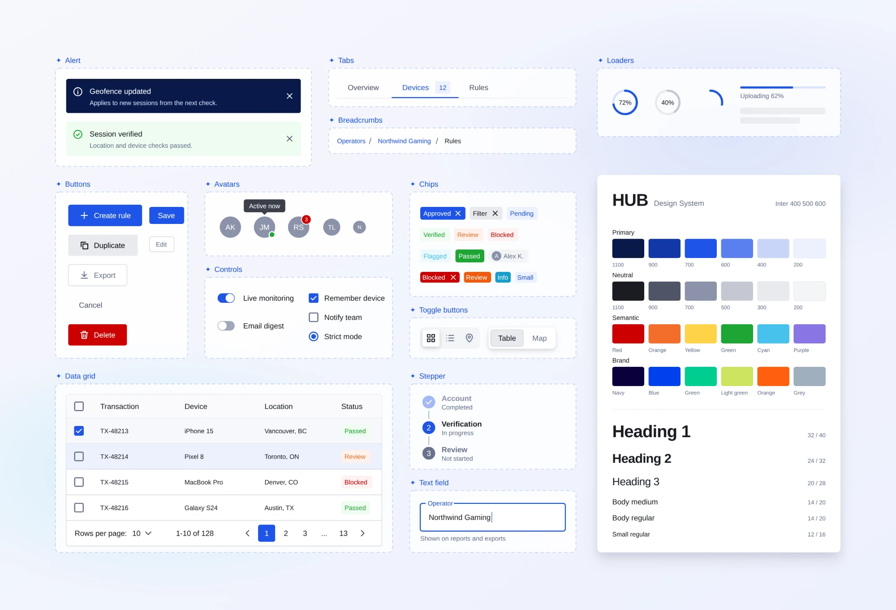
The problem
The design system looked finished in Figma, but it was a picture of a system. The coded library
underneath had no foundation: the MUI theme set a font and nothing else, with no design tokens.
Every component carried its own hard-coded CSS instead (the Button alone was 370 lines), so
changing a colour or a spacing value meant hunting it down component by component.
The Figma file couldn't have fed a better library anyway: dozens of near-duplicate text styles,
colours painted on instead of linked to variables, and spacing that existed only as numbers.
Step 1
Clean up Figma, without doing it by hand
Code generated from a messy file is just messy code, so the file came first. By hand, that meant
re-pointing every text style and value one at a time: 1,516 properties on just two component sets.
So I built two Figma plugins with Claude Code instead: one for type, one for everything else.
Plugin 1 · Type
Tokenization
Created the type variables (size, weight, family, line height), merged text styles that shared a size and weight, swapped every use onto four shared groups, and deleted the duplicates.
One run covers every page, component and nested instance in the file, then reports anything it couldn't convert.
→→
One text style group per component, each redefining the same few sizes under new names. Look at button: large and medium are both 14/20. Breadcrumb default, underline and button small are all 12/16.
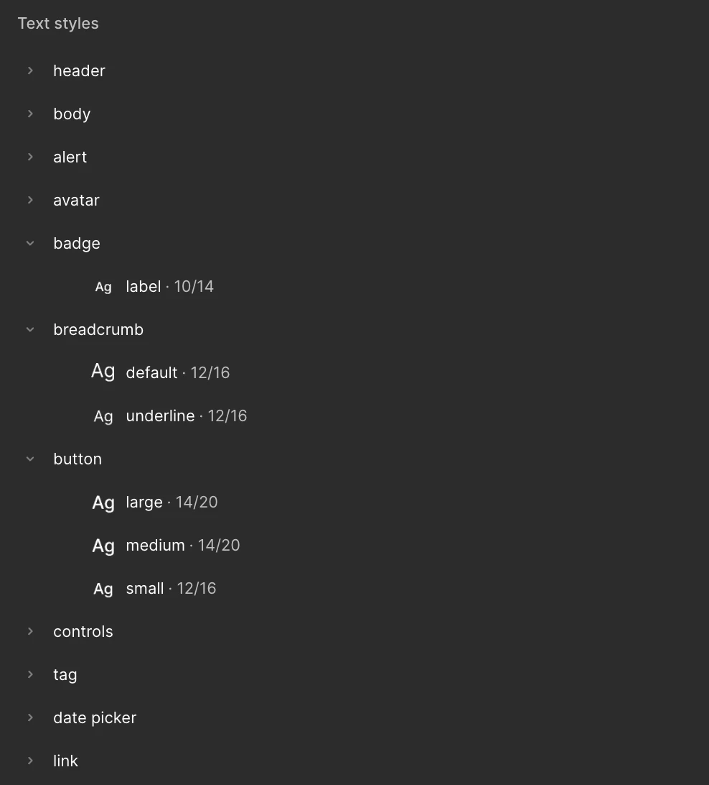
Every component style mapped to a shared one, across every page.
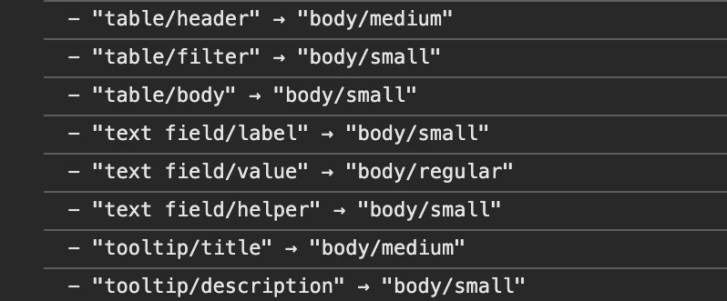
Four shared groups (heading, body, small and xsmall) replaced one per component. Every
style now reads its size, weight and line height from a variable, so changing body text across the whole file
is one edit, not a hunt through every component.
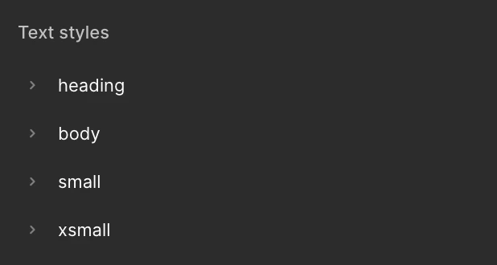
The four groups.
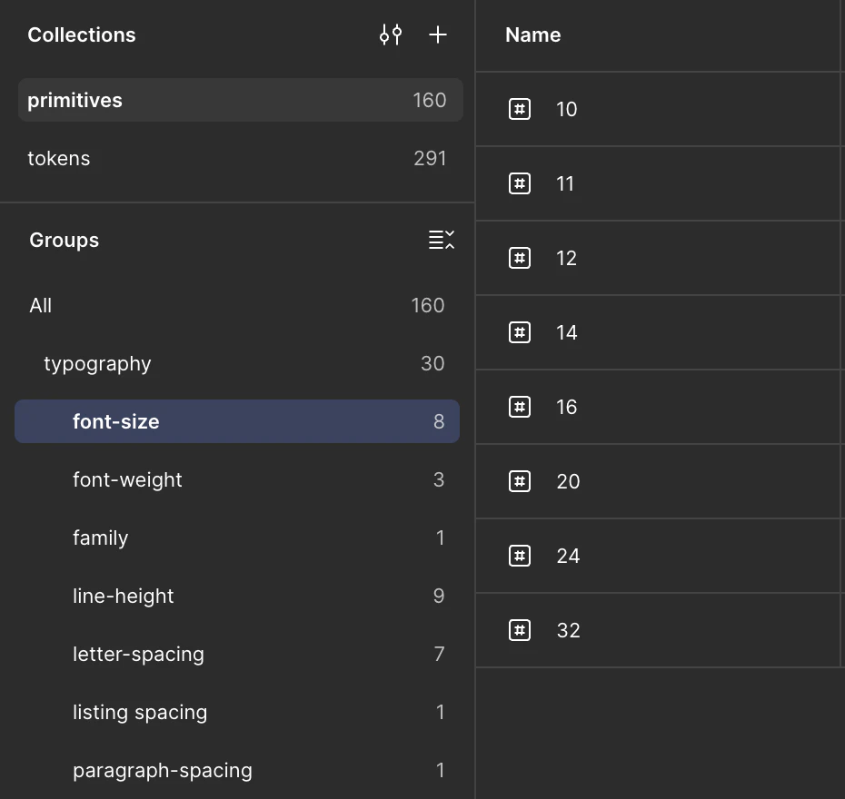
The variables behind them: 8 font sizes for the whole file.
Plugin 2 · Everything else
Variable relinker
Creates nothing new. It connects colours, padding, gaps, radii and stroke widths to the variables that already exist, and repairs broken links. 1,516 properties in its biggest run.
Figma's built-in fixes can reconnect a variable to its library or detach a dead one.
They can't turn a raw 12 into space-12, or point a dead variable at its replacement. This does both.
→→
Two kinds of mess: values typed in by hand, and links to variables that no longer exist.
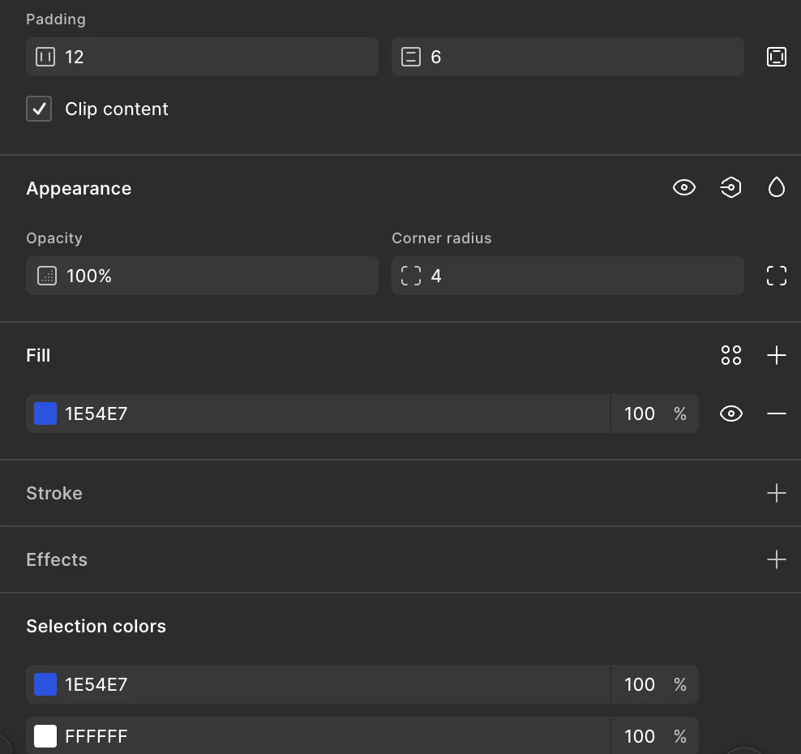
A Button's padding, radius and colours as raw numbers and hex.
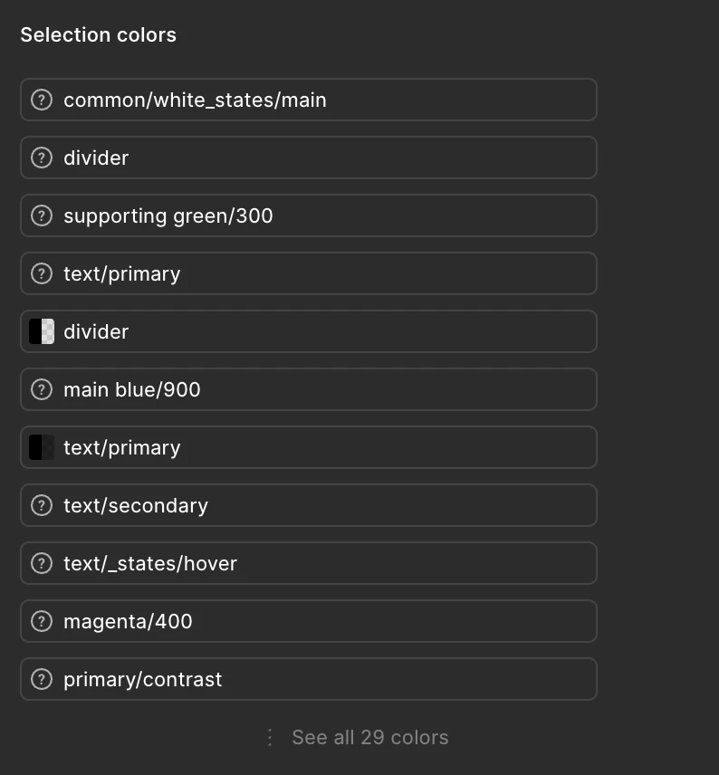
Links to deleted variables: 29 on one component.
Each value matched to a live token. Anything without one is flagged, not guessed.
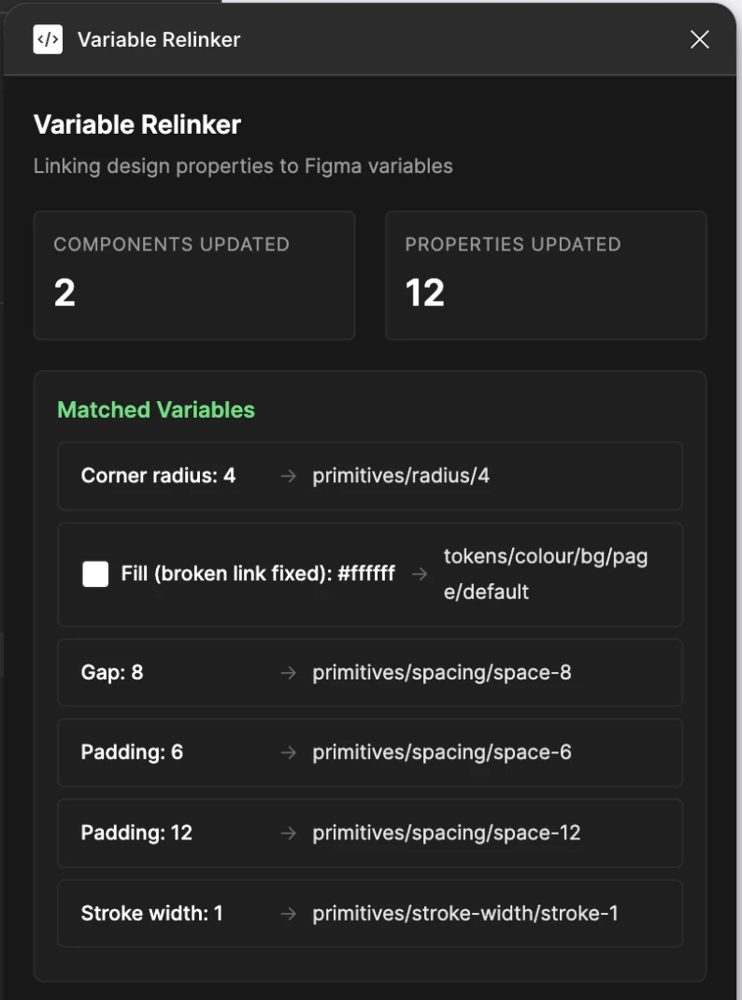
The same Button: every value is now a variable.
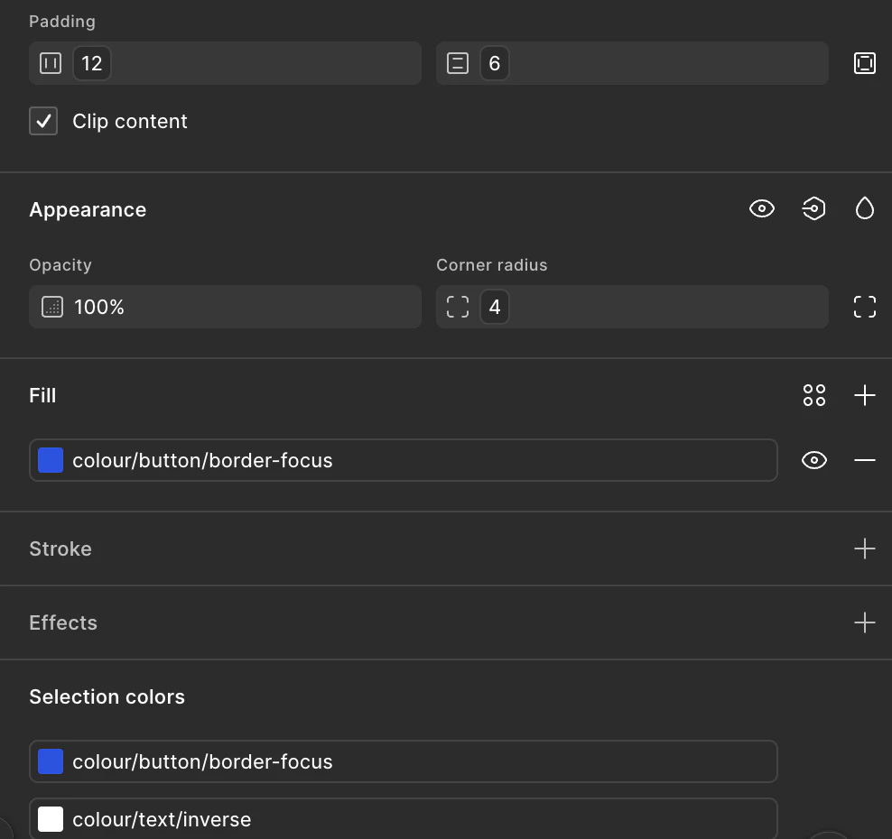
Step 2
Version one: generated in days, hollow underneath
With a clean file, I needed it in a form code could read, so I built a third plugin to export it.
Plugin 3 · Figma to code
Figma export
Exports variables, components and icons as JSON with consistent names that a script, an engineer or a model reads the same way.
→
Pick a component, export it in full or just what changed.
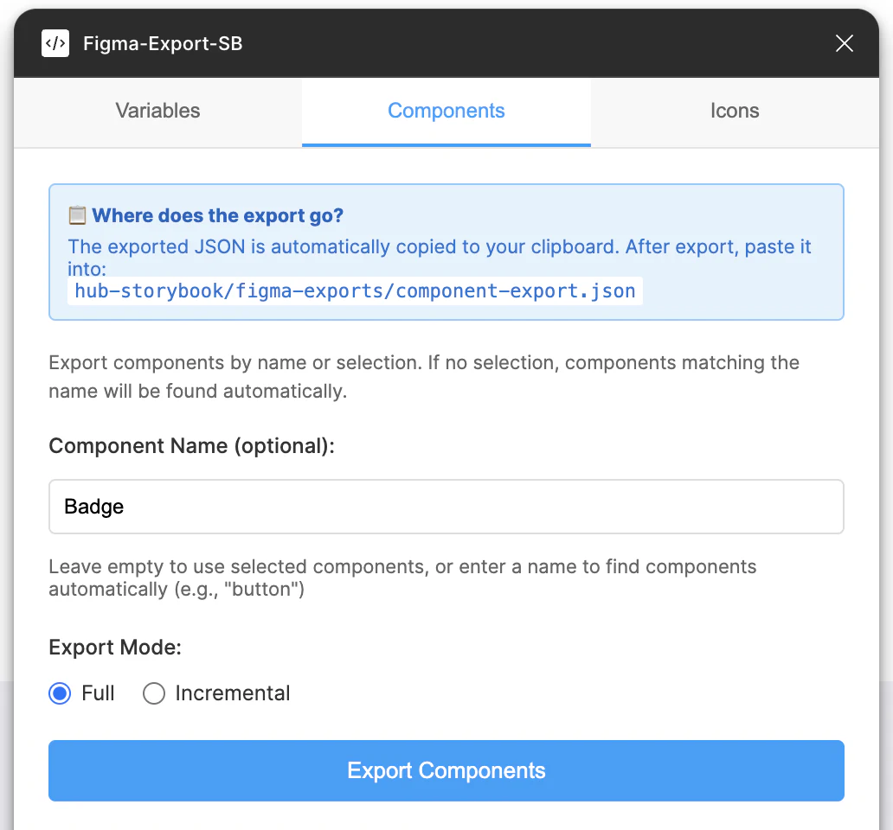
Badge.json, simplified: every variant and its options, plus a deep link the agent uses to read the live design. Node IDs and file keys removed.
Then I had an agent in Cursor generate the library from that export. In a few days
it produced 33 components, 156 Storybook stories and 420 passing tests. Honestly, I was surprised
how easy it had been. Then I tried to build a real screen with them.
You couldn't read their values. 22 of 33 components kept their own internal state. A Switch toggled on screen but never told the app it had changed.
Seven were showcase pieces. The Menu rendered five hard-coded “Menu item” rows and had no way to pass items, open it, or anchor it to a button. Dialog, Select, Tabs and others were the same: perfect in Storybook, unusable in a product.
Behaviour had become a dropdown. 18 components had a state prop with options like “hover” and “focus”, turning things the browser handles into settings you pick.
The tokens were ignored. 75 raw hex and rgba values, despite a token file generated for exactly this.
Nothing was accessible. Zero ARIA attributes across the library, and a radio button you could click off.
The tests couldn't see any of it. All 420 tests searched the source code for strings. None rendered a component, so every one passed while the components were broken.
The AI didn't go rogue. My rules did tell
it to build on MUI, and it did. The problem was who the rules were written for: Storybook.
Every component had to be interactive in Storybook, so each one kept its own state. Every Figma
property had to be a Storybook control, so hover and focus became a dropdown. Icons had to be
picked from a list, so you couldn't pass your own. Each rule made sense on its own; together they
wrapped MUI so tightly that product code lost everything MUI normally gives you:
children, onChange, anchoring, keyboard support.
And where the rules were right, nothing enforced them. They said never hard-code a colour; the
library had 75. They said build from our own components; the group components imported raw MUI
and restyled it inline.
117 lines. Hover and focus are a dropdown, labels are show/hide toggles, and there's no onChange, so the app can't tell the switch was flipped.
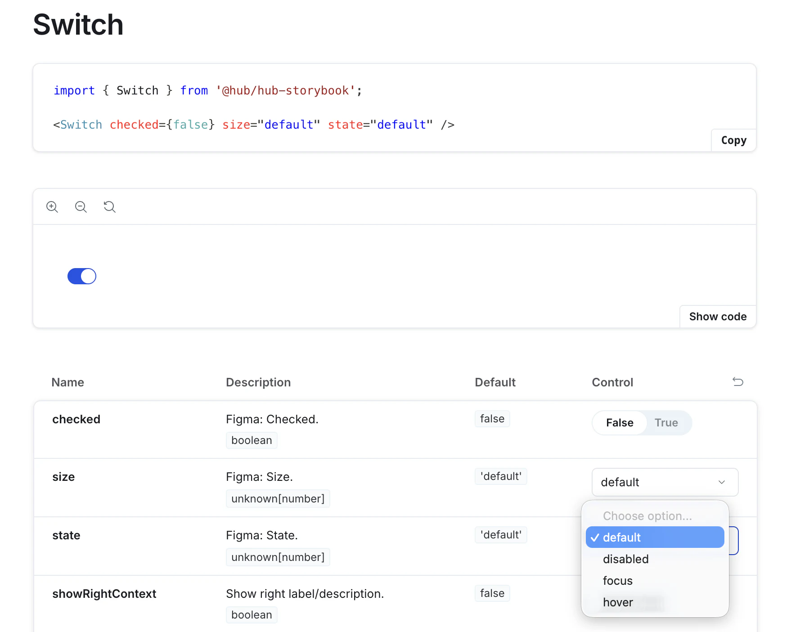
12 lines. MUI's own Switch. checked, onChange, disabled and size work as MUI documents them; the look comes from the theme.
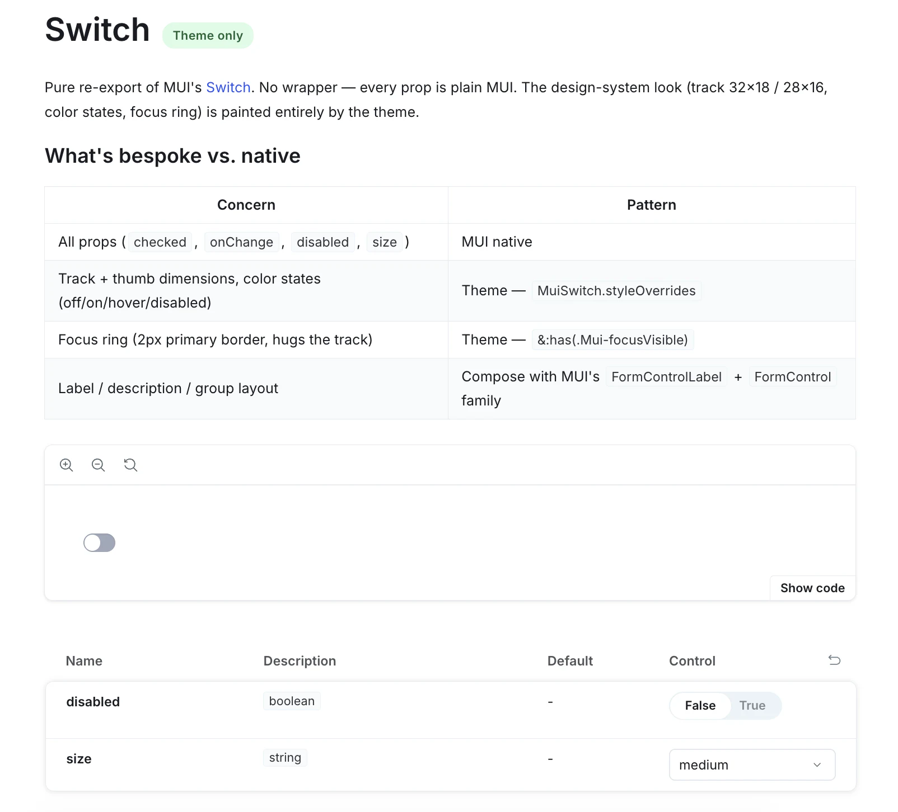
See the code
Switch, version one · 117 lines
export const Switch = ({ checked = false,
size = 'default', state = 'default', ... }) => {
const [on, setOn] = React.useState(checked);
React.useEffect(() => setOn(checked), [checked]);
...
<MuiSwitch checked={on}
onChange={(_, v) => setOn(v)} />
// no onChange prop: the app never hears about it
Switch, version two · 12 lines
import MuiSwitch from '@mui/material/Switch';
// All styling lives in theme.components.MuiSwitch,
// built from design tokens.
export const Switch = MuiSwitch;
Step 3
Version two: a contract, then an architecture
So version two started by changing what “done” meant. I audited everything first: a QA report
per component (38 of them), tracing every failure to one of seven root causes. Then I rewrote the
agent's rules. The biggest change: a component extends its MUI base instead of copying the
Figma picture. The rest stop it guessing: take the MUI API from MUI's documentation server,
never from memory; map every Figma value to the exact token; measure the render against Figma before
calling it done. The important rules became tests that render each component and fail the build on a
hard-coded colour, a raw MUI import where we have a component, or a stateless component holding state.
That fixed the components. Then I realised we didn't need most of them.
I wrote a guide for building new components that starts from one idea:
the design system is the theme, not the components. Every component falls into
one of three types, and you always pick the lightest one that works.
Type
What it is
Examples
Count
Theme only
MUI's own component, re-exported. All the design lives in the theme, built from tokens.
Switch, Tabs, Dialog, TextField, Select
22
Styled extension
MUI plus the one thing Figma needs that MUI doesn't have, added as a single prop.
Avatar sizes, Chip variants, IconButton variants
9
Composition
A new component assembled from design-system parts, for things MUI doesn't offer.
Sidebar, Topbar, Stepper, DatePicker, Drawer
9
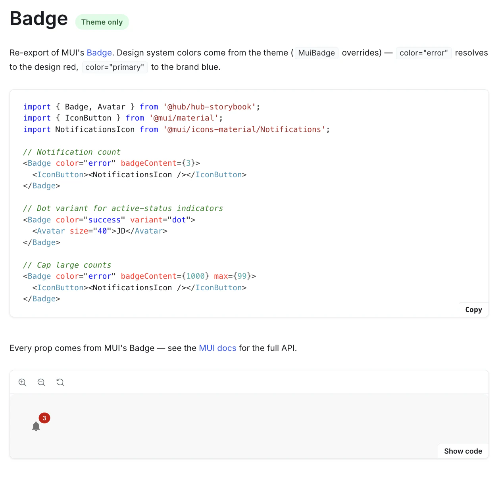
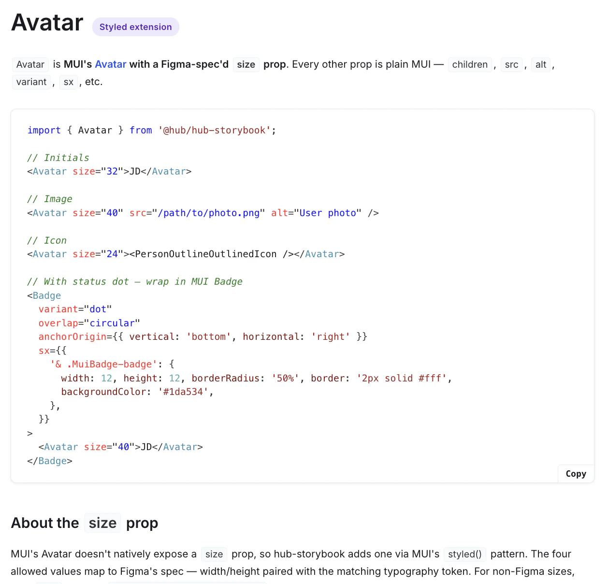
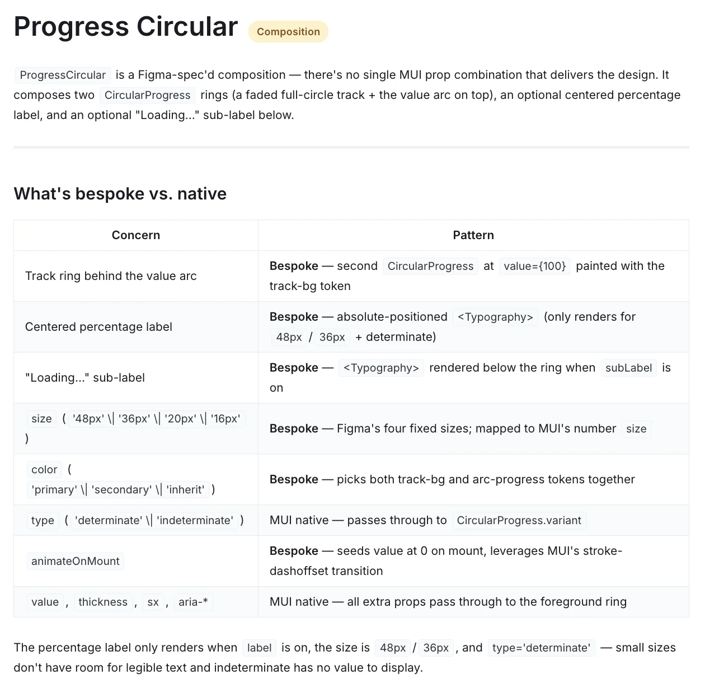
Every component's docs page in Storybook carries its type, and says what's bespoke and what's plain MUI.
The reason is rework. Every custom wrapper is an API teams have to migrate to and we have to keep
in step with MUI. With the design in the theme, teams keep importing straight from MUI and still get
the look, so adopting it is a theme swap, not a rewrite. Composition is only for what MUI doesn't
have; as the guide puts it, composition is the trap.
Breadcrumbs went from 289 lines to 20. Three custom group components were deleted outright, because MUI's form
controls already did their job.
The outcome
4products built on the library
66MUI components styled from design tokens in the theme
9new components built from the guide since May
240Storybook stories, with tests that actually render
The guide outlived the rebuild. Since May, the Alert, Drawer, DataGrid, Card,
DatePicker, Sidebar, Header, Stepper and Topbar have all been built from it, and for consumers a component now reads
like MUI because it is MUI: <Button label="Save" /> became
<Button>Save</Button>.
What I took from it
Decide what “done” means first. Then test for that, before you generate anything.
Fix data where it's authored. Every clean-up step downstream is a sign the source is wrong.
Passing tests and a good-looking Storybook can both lie. Real screens are the test that matters.
Most of the time, the theme beat a new component. Owning the theme gave us the design system without owning a fork of MUI.